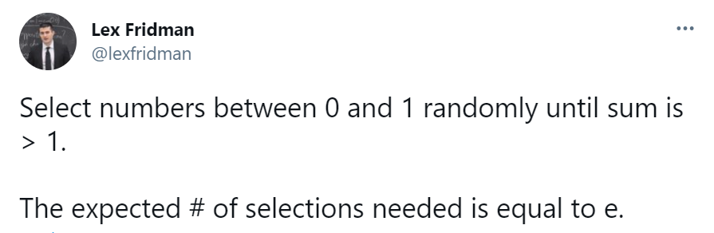

Εργαστήριο 3 στην Python
Θέματα που εξετάζονται στο εργαστήριο: αρχεία κειμένου1, κανονικές εκφράσεις234 (regular expressions), αρχεία XML5, μορφοποίηση κώδικα (π.χ. με το black6), διάταξη imports με το isort, docstrings.
Εργαλεία πειραματισμού με κανονικές εκφράσεις
- https://regex101.com/
- https://regexr.com/
- https://pythex.org/
- https://regexper.com/ οπτικοποίηση κανονικών εκφράσεων
- https://regexcrossword.com/
- https://alf.nu/RegexGolf
Εξάσκηση (εκφωνήσεις και λύσεις ασκήσεων)
Άσκηση E3A1 - Στο ακόλουθο tweet ο Lex Fridman αναφέρει ότι η αναμενόμενη τιμή του πλήθους τυχαίων επιλογών αριθμών στο διάστημα 0 έως 1 που απαιτούνται έτσι ώστε το άθροισμά τους να ξεπεράσει το 1 είναι ίση με e=2.718...

Τροποποιήστε το ακόλουθο template κώδικα έτσι ώστε η λύση σας να επιτυγχάνει στο unit test (παρατηρήστε ότι ο κώδικας περιέχει 2 docstrings):
Λύση άσκησης 1
Άσκηση E3A2 - Κατεβάστε σε txt μορφή το βιβλίο “Μεταμόρφωση” του Φράνσις Κάφκα από το https://www.gutenberg.org/ebooks/5200 ή από το metamorphosis.txt. Γράψτε πρόγραμμα που να διαβάζει το κείμενο. Στη συνέχεια, απομονώστε το κείμενο της πρώτης παραγράφου (One morning έως looked), μετατρέψτε το κείμενο σε πεζά γράμματα, και συμπληρώστε τις συναρτήσεις που απαντούν στα ακόλουθα ερωτήματα:
- Ποιο είναι το πλήθος των λέξεων του κειμένου; Για το ερώτημα αυτό όπως και για τα επόμενα θεωρήστε ως λέξεις τις συμβολοσειρές που περιέχουν μόνο χαρακτήρες του αγγλικού αλφαβήτου. Επίσης, μας ενδιαφέρουν μόνο οι διαφορετικές μεταξύ τους λέξεις.
- Ποιο είναι το πλήθος των λέξεων του κειμένου που ξεκινούν με τον χαρακτήρα 'h' και τελειώνουν με τον χαρακτήρα 'e';
- Ποιο είναι το πλήθος των λέξεων του κειμένου με 5 χαρακτήρες;
- Ποιο είναι το πλήθος λέξεων του κειμένου που περιέχουν συνεχόμενους τους χαρακτήρες 'a', 's';
- Ποιο είναι το πλήθος λέξεων του κειμένου που περιέχουν συνεχόμενους τους χαρακτήρες 'a', 's' σε οποιαδήποτε σειρά;
- Ποιο είναι το πλήθος λέξεων του κειμένου που ξεκινούν και τελειώνουν με τον ίδιο χαρακτήρα;
- Ποιο είναι το πλήθος λέξεων του κειμένου που ξεκινούν και τελειώνουν με τους δύο ίδιους χαρακτήρες;
Τροποποιήστε το ακόλουθο template έτσι ώστε η λύση σας να επιτυγχάνει σε όλα τα unit tests:
Λύση άσκησης 2
| template3_2_sol.py | |
|---|---|
1 2 3 4 5 6 7 8 9 10 11 12 13 14 15 16 17 18 19 20 21 22 23 24 25 26 27 28 29 30 31 32 33 34 35 36 37 38 39 40 41 42 43 44 45 46 47 48 49 50 51 52 53 54 55 56 57 58 59 60 61 62 63 64 65 66 67 68 69 70 71 72 73 74 75 76 77 78 79 80 81 82 83 84 85 86 87 88 89 90 91 92 93 94 95 96 97 98 99 100 101 102 103 104 105 106 107 108 109 110 111 112 113 114 115 116 117 | |
$ python template3_2_sol.py
one morning, when gregor samsa woke from troubled dreams, he found
himself transformed in his bed into a horrible vermin. he lay on his
armour-like back, and if he lifted his head a little he could see his
brown belly, slightly domed and divided by arches into stiff sections.
the bedding was hardly able to cover it and seemed ready to slide off
any moment. his many legs, pitifully thin compared with the size of the
rest of him, waved about helplessly as he looked.
.......
----------------------------------------------------------------------
Ran 7 tests in 0.001s
OK
Άσκηση E3A3 - Κατεβάστε το MovieLens 100K Dataset ml-100k.zip. Εντοπίστε το αρχείο u.data που περιέχει 100.000 αξιολογήσεις από 943 χρήστες για 1.682 ταινίες και το αρχείο u.item που περιέχει τα στοιχεία των ταινιών. Εντοπίστε τις 10 ταινίες με τις καλύτερες αξιολογήσεις κατά μέσο όρο λαμβάνοντας υπόψη μόνο ταινίες που έχουν λάβει τουλάχιστον 50 αξιολογήσεις η κάθε μια. Εμφανίστε τους τίτλους αυτών των ταινιών. Παρατήρηση: Δείτε το αρχείο README στο ml-100k.zip για περιγραφή των περιεχομένων των αρχείων.
Λύση άσκησης 3 (α' τρόπος)
$ python 3_3_sol.py
Πλήθος ταινιών = 1682
Πλήθος ταινιών με τουλάχιστον 50 αξιολογήσεις = 603
Close Shave, A (1995) 4.4911
Schindler's List (1993) 4.4664
Wrong Trousers, The (1993) 4.4661
Casablanca (1942) 4.4568
Wallace & Gromit: The Best of Aardman Animation (1996) 4.4478
Shawshank Redemption, The (1994) 4.4452
Rear Window (1954) 4.3876
Usual Suspects, The (1995) 4.3858
Star Wars (1977) 4.3585
12 Angry Men (1957) 4.3440
Λύση άσκησης 3 (β' τρόπος με χρήση της βιβλιοθήκης pandas)
Πρώτα θα πρέπει να εγκατασταθούν οι βιβλιοθήκες pandas και tabulate.
$ python 3_3_sol_pandas.py
╒══════════╤══════════╤════════════════════════════════════════════════════════╕
│ #USERS │ RATING │ MOVIE NAME │
╞══════════╪══════════╪════════════════════════════════════════════════════════╡
│ 112 │ 4.49107 │ Close Shave, A (1995) │
├──────────┼──────────┼────────────────────────────────────────────────────────┤
│ 298 │ 4.46644 │ Schindler's List (1993) │
├──────────┼──────────┼────────────────────────────────────────────────────────┤
│ 118 │ 4.4661 │ Wrong Trousers, The (1993) │
├──────────┼──────────┼────────────────────────────────────────────────────────┤
│ 243 │ 4.45679 │ Casablanca (1942) │
├──────────┼──────────┼────────────────────────────────────────────────────────┤
│ 67 │ 4.44776 │ Wallace & Gromit: The Best of Aardman Animation (1996) │
├──────────┼──────────┼────────────────────────────────────────────────────────┤
│ 283 │ 4.44523 │ Shawshank Redemption, The (1994) │
├──────────┼──────────┼────────────────────────────────────────────────────────┤
│ 209 │ 4.38756 │ Rear Window (1954) │
├──────────┼──────────┼────────────────────────────────────────────────────────┤
│ 267 │ 4.38577 │ Usual Suspects, The (1995) │
├──────────┼──────────┼────────────────────────────────────────────────────────┤
│ 583 │ 4.35849 │ Star Wars (1977) │
├──────────┼──────────┼────────────────────────────────────────────────────────┤
│ 125 │ 4.344 │ 12 Angry Men (1957) │
╘══════════╧══════════╧════════════════════════════════════════════════════════╛
Άσκηση E3A4 - Κατεβάστε το ακόλουθο XML αρχείο που περιέχει το πρόγραμμα αγώνων ενός πρωταθλήματος.
ITC2021_Test8_SolGenMethodA.xml
Για κάθε αγώνα εμφανίστε την απόσταση περιόδων ανάμεσα στον αγώνα και στον επαναληπτικό του. Για παράδειγμα, για τις ομάδες 0 και 1 ο αγώνας 0-1 γίνεται στην περίοδο 33 και ο επαναληπτικός αγώνας 1-0 γίνεται στην περίοδο 14, άρα η απόσταση των δύο αγώνων είναι 33-14=19 αγωνιστικές.
Λύση άσκησης 4 (α' τρόπος)
Το αρχείο ITC2021_Test8_SolGenMethodA.xml θα πρέπει να βρίσκεται στον ίδιο κατάλογο με το 3_4_sol.py.
$ python 3_4_sol.py
Η ομάδα 0 παίζει εναντίον της ομάδας 1 στις αγωνιστικές 33 & 14, διαφορά 19
Η ομάδα 0 παίζει εναντίον της ομάδας 2 στις αγωνιστικές 13 & 29, διαφορά 16
Η ομάδα 0 παίζει εναντίον της ομάδας 3 στις αγωνιστικές 10 & 35, διαφορά 25
Η ομάδα 0 παίζει εναντίον της ομάδας 4 στις αγωνιστικές 6 & 25, διαφορά 19
Η ομάδα 0 παίζει εναντίον της ομάδας 5 στις αγωνιστικές 15 & 37, διαφορά 22
Η ομάδα 0 παίζει εναντίον της ομάδας 6 στις αγωνιστικές 36 & 18, διαφορά 18
Η ομάδα 0 παίζει εναντίον της ομάδας 7 στις αγωνιστικές 30 & 4, διαφορά 26
Η ομάδα 0 παίζει εναντίον της ομάδας 8 στις αγωνιστικές 21 & 11, διαφορά 10
Η ομάδα 0 παίζει εναντίον της ομάδας 9 στις αγωνιστικές 17 & 31, διαφορά 14
Η ομάδα 0 παίζει εναντίον της ομάδας 10 στις αγωνιστικές 1 & 20, διαφορά 19
Η ομάδα 0 παίζει εναντίον της ομάδας 11 στις αγωνιστικές 3 & 32, διαφορά 29
Η ομάδα 0 παίζει εναντίον της ομάδας 12 στις αγωνιστικές 26 & 16, διαφορά 10
Η ομάδα 0 παίζει εναντίον της ομάδας 13 στις αγωνιστικές 12 & 24, διαφορά 12
Η ομάδα 0 παίζει εναντίον της ομάδας 14 στις αγωνιστικές 19 & 0, διαφορά 19
Η ομάδα 0 παίζει εναντίον της ομάδας 15 στις αγωνιστικές 27 & 9, διαφορά 18
Η ομάδα 0 παίζει εναντίον της ομάδας 16 στις αγωνιστικές 5 & 22, διαφορά 17
Η ομάδα 0 παίζει εναντίον της ομάδας 17 στις αγωνιστικές 23 & 7, διαφορά 16
Η ομάδα 0 παίζει εναντίον της ομάδας 18 στις αγωνιστικές 34 & 2, διαφορά 32
Η ομάδα 0 παίζει εναντίον της ομάδας 19 στις αγωνιστικές 8 & 28, διαφορά 20
Η ομάδα 1 παίζει εναντίον της ομάδας 2 στις αγωνιστικές 30 & 15, διαφορά 15
Η ομάδα 1 παίζει εναντίον της ομάδας 3 στις αγωνιστικές 7 & 24, διαφορά 17
Η ομάδα 1 παίζει εναντίον της ομάδας 4 στις αγωνιστικές 5 & 37, διαφορά 32
Η ομάδα 1 παίζει εναντίον της ομάδας 5 στις αγωνιστικές 18 & 31, διαφορά 13
Η ομάδα 1 παίζει εναντίον της ομάδας 6 στις αγωνιστικές 19 & 4, διαφορά 15
Η ομάδα 1 παίζει εναντίον της ομάδας 7 στις αγωνιστικές 32 & 6, διαφορά 26
Η ομάδα 1 παίζει εναντίον της ομάδας 8 στις αγωνιστικές 25 & 13, διαφορά 12
Η ομάδα 1 παίζει εναντίον της ομάδας 9 στις αγωνιστικές 3 & 20, διαφορά 17
Η ομάδα 1 παίζει εναντίον της ομάδας 10 στις αγωνιστικές 9 & 22, διαφορά 13
Η ομάδα 1 παίζει εναντίον της ομάδας 11 στις αγωνιστικές 12 & 35, διαφορά 23
Η ομάδα 1 παίζει εναντίον της ομάδας 12 στις αγωνιστικές 23 & 2, διαφορά 21
Η ομάδα 1 παίζει εναντίον της ομάδας 13 στις αγωνιστικές 27 & 11, διαφορά 16
Η ομάδα 1 παίζει εναντίον της ομάδας 14 στις αγωνιστικές 28 & 17, διαφορά 11
Η ομάδα 1 παίζει εναντίον της ομάδας 15 στις αγωνιστικές 1 & 29, διαφορά 28
Η ομάδα 1 παίζει εναντίον της ομάδας 16 στις αγωνιστικές 34 & 10, διαφορά 24
Η ομάδα 1 παίζει εναντίον της ομάδας 17 στις αγωνιστικές 21 & 8, διαφορά 13
Η ομάδα 1 παίζει εναντίον της ομάδας 18 στις αγωνιστικές 36 & 0, διαφορά 36
Η ομάδα 1 παίζει εναντίον της ομάδας 19 στις αγωνιστικές 16 & 26, διαφορά 10
Η ομάδα 2 παίζει εναντίον της ομάδας 3 στις αγωνιστικές 3 & 26, διαφορά 23
Η ομάδα 2 παίζει εναντίον της ομάδας 4 στις αγωνιστικές 31 & 0, διαφορά 31
Η ομάδα 2 παίζει εναντίον της ομάδας 5 στις αγωνιστικές 27 & 16, διαφορά 11
Η ομάδα 2 παίζει εναντίον της ομάδας 6 στις αγωνιστικές 37 & 7, διαφορά 30
Η ομάδα 2 παίζει εναντίον της ομάδας 7 στις αγωνιστικές 35 & 18, διαφορά 17
Η ομάδα 2 παίζει εναντίον της ομάδας 8 στις αγωνιστικές 9 & 20, διαφορά 11
Η ομάδα 2 παίζει εναντίον της ομάδας 9 στις αγωνιστικές 8 & 22, διαφορά 14
Η ομάδα 2 παίζει εναντίον της ομάδας 10 στις αγωνιστικές 14 & 32, διαφορά 18
Η ομάδα 2 παίζει εναντίον της ομάδας 11 στις αγωνιστικές 1 & 23, διαφορά 22
Η ομάδα 2 παίζει εναντίον της ομάδας 12 στις αγωνιστικές 19 & 5, διαφορά 14
Η ομάδα 2 παίζει εναντίον της ομάδας 13 στις αγωνιστικές 17 & 36, διαφορά 19
Η ομάδα 2 παίζει εναντίον της ομάδας 14 στις αγωνιστικές 21 & 11, διαφορά 10
Η ομάδα 2 παίζει εναντίον της ομάδας 15 στις αγωνιστικές 25 & 10, διαφορά 15
Η ομάδα 2 παίζει εναντίον της ομάδας 16 στις αγωνιστικές 24 & 4, διαφορά 20
Η ομάδα 2 παίζει εναντίον της ομάδας 17 στις αγωνιστικές 34 & 2, διαφορά 32
Η ομάδα 2 παίζει εναντίον της ομάδας 18 στις αγωνιστικές 6 & 28, διαφορά 22
Η ομάδα 2 παίζει εναντίον της ομάδας 19 στις αγωνιστικές 12 & 33, διαφορά 21
Η ομάδα 3 παίζει εναντίον της ομάδας 4 στις αγωνιστικές 28 & 13, διαφορά 15
Η ομάδα 3 παίζει εναντίον της ομάδας 5 στις αγωνιστικές 11 & 25, διαφορά 14
Η ομάδα 3 παίζει εναντίον της ομάδας 6 στις αγωνιστικές 14 & 32, διαφορά 18
Η ομάδα 3 παίζει εναντίον της ομάδας 7 στις αγωνιστικές 33 & 17, διαφορά 16
Η ομάδα 3 παίζει εναντίον της ομάδας 8 στις αγωνιστικές 15 & 27, διαφορά 12
Η ομάδα 3 παίζει εναντίον της ομάδας 9 στις αγωνιστικές 2 & 36, διαφορά 34
Η ομάδα 3 παίζει εναντίον της ομάδας 10 στις αγωνιστικές 19 & 0, διαφορά 19
Η ομάδα 3 παίζει εναντίον της ομάδας 11 στις αγωνιστικές 31 & 16, διαφορά 15
Η ομάδα 3 παίζει εναντίον της ομάδας 12 στις αγωνιστικές 8 & 29, διαφορά 21
Η ομάδα 3 παίζει εναντίον της ομάδας 13 στις αγωνιστικές 4 & 23, διαφορά 19
Η ομάδα 3 παίζει εναντίον της ομάδας 14 στις αγωνιστικές 1 & 20, διαφορά 19
Η ομάδα 3 παίζει εναντίον της ομάδας 15 στις αγωνιστικές 18 & 34, διαφορά 16
Η ομάδα 3 παίζει εναντίον της ομάδας 16 στις αγωνιστικές 21 & 12, διαφορά 9
Η ομάδα 3 παίζει εναντίον της ομάδας 17 στις αγωνιστικές 6 & 22, διαφορά 16
Η ομάδα 3 παίζει εναντίον της ομάδας 18 στις αγωνιστικές 37 & 5, διαφορά 32
Η ομάδα 3 παίζει εναντίον της ομάδας 19 στις αγωνιστικές 30 & 9, διαφορά 21
Η ομάδα 4 παίζει εναντίον της ομάδας 5 στις αγωνιστικές 4 & 34, διαφορά 30
Η ομάδα 4 παίζει εναντίον της ομάδας 6 στις αγωνιστικές 22 & 1, διαφορά 21
Η ομάδα 4 παίζει εναντίον της ομάδας 7 στις αγωνιστικές 19 & 9, διαφορά 10
Η ομάδα 4 παίζει εναντίον της ομάδας 8 στις αγωνιστικές 7 & 24, διαφορά 17
Η ομάδα 4 παίζει εναντίον της ομάδας 9 στις αγωνιστικές 29 & 15, διαφορά 14
Η ομάδα 4 παίζει εναντίον της ομάδας 10 στις αγωνιστικές 35 & 18, διαφορά 17
Η ομάδα 4 παίζει εναντίον της ομάδας 11 στις αγωνιστικές 30 & 11, διαφορά 19
Η ομάδα 4 παίζει εναντίον της ομάδας 12 στις αγωνιστικές 33 & 3, διαφορά 30
Η ομάδα 4 παίζει εναντίον της ομάδας 13 στις αγωνιστικές 2 & 21, διαφορά 19
Η ομάδα 4 παίζει εναντίον της ομάδας 14 στις αγωνιστικές 14 & 27, διαφορά 13
Η ομάδα 4 παίζει εναντίον της ομάδας 15 στις αγωνιστικές 23 & 12, διαφορά 11
Η ομάδα 4 παίζει εναντίον της ομάδας 16 στις αγωνιστικές 8 & 36, διαφορά 28
Η ομάδα 4 παίζει εναντίον της ομάδας 17 στις αγωνιστικές 16 & 20, διαφορά 4
Η ομάδα 4 παίζει εναντίον της ομάδας 18 στις αγωνιστικές 10 & 26, διαφορά 16
Η ομάδα 4 παίζει εναντίον της ομάδας 19 στις αγωνιστικές 32 & 17, διαφορά 15
Η ομάδα 5 παίζει εναντίον της ομάδας 6 στις αγωνιστικές 26 & 13, διαφορά 13
Η ομάδα 5 παίζει εναντίον της ομάδας 7 στις αγωνιστικές 21 & 7, διαφορά 14
Η ομάδα 5 παίζει εναντίον της ομάδας 8 στις αγωνιστικές 5 & 22, διαφορά 17
Η ομάδα 5 παίζει εναντίον της ομάδας 9 στις αγωνιστικές 32 & 9, διαφορά 23
Η ομάδα 5 παίζει εναντίον της ομάδας 10 στις αγωνιστικές 2 & 24, διαφορά 22
Η ομάδα 5 παίζει εναντίον της ομάδας 11 στις αγωνιστικές 8 & 33, διαφορά 25
Η ομάδα 5 παίζει εναντίον της ομάδας 12 στις αγωνιστικές 6 & 35, διαφορά 29
Η ομάδα 5 παίζει εναντίον της ομάδας 13 στις αγωνιστικές 14 & 28, διαφορά 14
Η ομάδα 5 παίζει εναντίον της ομάδας 14 στις αγωνιστικές 10 & 29, διαφορά 19
Η ομάδα 5 παίζει εναντίον της ομάδας 15 στις αγωνιστικές 3 & 19, διαφορά 16
Η ομάδα 5 παίζει εναντίον της ομάδας 16 στις αγωνιστικές 20 & 1, διαφορά 19
Η ομάδα 5 παίζει εναντίον της ομάδας 17 στις αγωνιστικές 36 & 17, διαφορά 19
Η ομάδα 5 παίζει εναντίον της ομάδας 18 στις αγωνιστικές 12 & 30, διαφορά 18
Η ομάδα 5 παίζει εναντίον της ομάδας 19 στις αγωνιστικές 23 & 0, διαφορά 23
Η ομάδα 6 παίζει εναντίον της ομάδας 7 στις αγωνιστικές 29 & 12, διαφορά 17
Η ομάδα 6 παίζει εναντίον της ομάδας 8 στις αγωνιστικές 23 & 6, διαφορά 17
Η ομάδα 6 παίζει εναντίον της ομάδας 9 στις αγωνιστικές 21 & 10, διαφορά 11
Η ομάδα 6 παίζει εναντίον της ομάδας 10 στις αγωνιστικές 25 & 8, διαφορά 17
Η ομάδα 6 παίζει εναντίον της ομάδας 11 στις αγωνιστικές 20 & 2, διαφορά 18
Η ομάδα 6 παίζει εναντίον της ομάδας 12 στις αγωνιστικές 15 & 31, διαφορά 16
Η ομάδα 6 παίζει εναντίον της ομάδας 13 στις αγωνιστικές 30 & 0, διαφορά 30
Η ομάδα 6 παίζει εναντίον της ομάδας 14 στις αγωνιστικές 3 & 33, διαφορά 30
Η ομάδα 6 παίζει εναντίον της ομάδας 15 στις αγωνιστικές 11 & 24, διαφορά 13
Η ομάδα 6 παίζει εναντίον της ομάδας 16 στις αγωνιστικές 16 & 35, διαφορά 19
Η ομάδα 6 παίζει εναντίον της ομάδας 17 στις αγωνιστικές 9 & 28, διαφορά 19
Η ομάδα 6 παίζει εναντίον της ομάδας 18 στις αγωνιστικές 27 & 17, διαφορά 10
Η ομάδα 6 παίζει εναντίον της ομάδας 19 στις αγωνιστικές 34 & 5, διαφορά 29
Η ομάδα 7 παίζει εναντίον της ομάδας 8 στις αγωνιστικές 3 & 36, διαφορά 33
Η ομάδα 7 παίζει εναντίον της ομάδας 9 στις αγωνιστικές 26 & 16, διαφορά 10
Η ομάδα 7 παίζει εναντίον της ομάδας 10 στις αγωνιστικές 23 & 5, διαφορά 18
Η ομάδα 7 παίζει εναντίον της ομάδας 11 στις αγωνιστικές 34 & 0, διαφορά 34
Η ομάδα 7 παίζει εναντίον της ομάδας 12 στις αγωνιστικές 37 & 11, διαφορά 26
Η ομάδα 7 παίζει εναντίον της ομάδας 13 στις αγωνιστικές 25 & 10, διαφορά 15
Η ομάδα 7 παίζει εναντίον της ομάδας 14 στις αγωνιστικές 22 & 15, διαφορά 7
Η ομάδα 7 παίζει εναντίον της ομάδας 15 στις αγωνιστικές 20 & 2, διαφορά 18
Η ομάδα 7 παίζει εναντίον της ομάδας 16 στις αγωνιστικές 28 & 13, διαφορά 15
Η ομάδα 7 παίζει εναντίον της ομάδας 17 στις αγωνιστικές 1 & 27, διαφορά 26
Η ομάδα 7 παίζει εναντίον της ομάδας 18 στις αγωνιστικές 31 & 8, διαφορά 23
Η ομάδα 7 παίζει εναντίον της ομάδας 19 στις αγωνιστικές 14 & 24, διαφορά 10
Η ομάδα 8 παίζει εναντίον της ομάδας 9 στις αγωνιστικές 34 & 12, διαφορά 22
Η ομάδα 8 παίζει εναντίον της ομάδας 10 στις αγωνιστικές 4 & 28, διαφορά 24
Η ομάδα 8 παίζει εναντίον της ομάδας 11 στις αγωνιστικές 10 & 19, διαφορά 9
Η ομάδα 8 παίζει εναντίον της ομάδας 12 στις αγωνιστικές 18 & 32, διαφορά 14
Η ομάδα 8 παίζει εναντίον της ομάδας 13 στις αγωνιστικές 1 & 26, διαφορά 25
Η ομάδα 8 παίζει εναντίον της ομάδας 14 στις αγωνιστικές 16 & 30, διαφορά 14
Η ομάδα 8 παίζει εναντίον της ομάδας 15 στις αγωνιστικές 8 & 37, διαφορά 29
Η ομάδα 8 παίζει εναντίον της ομάδας 16 στις αγωνιστικές 29 & 17, διαφορά 12
Η ομάδα 8 παίζει εναντίον της ομάδας 17 στις αγωνιστικές 31 & 0, διαφορά 31
Η ομάδα 8 παίζει εναντίον της ομάδας 18 στις αγωνιστικές 14 & 33, διαφορά 19
Η ομάδα 8 παίζει εναντίον της ομάδας 19 στις αγωνιστικές 2 & 35, διαφορά 33
Η ομάδα 9 παίζει εναντίον της ομάδας 10 στις αγωνιστικές 13 & 30, διαφορά 17
Η ομάδα 9 παίζει εναντίον της ομάδας 11 στις αγωνιστικές 25 & 5, διαφορά 20
Η ομάδα 9 παίζει εναντίον της ομάδας 12 στις αγωνιστικές 24 & 0, διαφορά 24
Η ομάδα 9 παίζει εναντίον της ομάδας 13 στις αγωνιστικές 37 & 18, διαφορά 19
Η ομάδα 9 παίζει εναντίον της ομάδας 14 στις αγωνιστικές 7 & 35, διαφορά 28
Η ομάδα 9 παίζει εναντίον της ομάδας 15 στις αγωνιστικές 4 & 28, διαφορά 24
Η ομάδα 9 παίζει εναντίον της ομάδας 16 στις αγωνιστικές 33 & 6, διαφορά 27
Η ομάδα 9 παίζει εναντίον της ομάδας 17 στις αγωνιστικές 19 & 14, διαφορά 5
Η ομάδα 9 παίζει εναντίον της ομάδας 18 στις αγωνιστικές 1 & 23, διαφορά 22
Η ομάδα 9 παίζει εναντίον της ομάδας 19 στις αγωνιστικές 27 & 11, διαφορά 16
Η ομάδα 10 παίζει εναντίον της ομάδας 11 στις αγωνιστικές 17 & 29, διαφορά 12
Η ομάδα 10 παίζει εναντίον της ομάδας 12 στις αγωνιστικές 10 & 27, διαφορά 17
Η ομάδα 10 παίζει εναντίον της ομάδας 13 στις αγωνιστικές 34 & 16, διαφορά 18
Η ομάδα 10 παίζει εναντίον της ομάδας 14 στις αγωνιστικές 36 & 12, διαφορά 24
Η ομάδα 10 παίζει εναντίον της ομάδας 15 στις αγωνιστικές 15 & 31, διαφορά 16
Η ομάδα 10 παίζει εναντίον της ομάδας 16 στις αγωνιστικές 26 & 7, διαφορά 19
Η ομάδα 10 παίζει εναντίον της ομάδας 17 στις αγωνιστικές 11 & 33, διαφορά 22
Η ομάδα 10 παίζει εναντίον της ομάδας 18 στις αγωνιστικές 3 & 21, διαφορά 18
Η ομάδα 10 παίζει εναντίον της ομάδας 19 στις αγωνιστικές 6 & 37, διαφορά 31
Η ομάδα 11 παίζει εναντίον της ομάδας 12 στις αγωνιστικές 28 & 13, διαφορά 15
Η ομάδα 11 παίζει εναντίον της ομάδας 13 στις αγωνιστικές 22 & 6, διαφορά 16
Η ομάδα 11 παίζει εναντίον της ομάδας 14 στις αγωνιστικές 9 & 37, διαφορά 28
Η ομάδα 11 παίζει εναντίον της ομάδας 15 στις αγωνιστικές 14 & 21, διαφορά 7
Η ομάδα 11 παίζει εναντίον της ομάδας 16 στις αγωνιστικές 18 & 27, διαφορά 9
Η ομάδα 11 παίζει εναντίον της ομάδας 17 στις αγωνιστικές 26 & 4, διαφορά 22
Η ομάδα 11 παίζει εναντίον της ομάδας 18 στις αγωνιστικές 7 & 24, διαφορά 17
Η ομάδα 11 παίζει εναντίον της ομάδας 19 στις αγωνιστικές 36 & 15, διαφορά 21
Η ομάδα 12 παίζει εναντίον της ομάδας 13 στις αγωνιστικές 7 & 20, διαφορά 13
Η ομάδα 12 παίζει εναντίον της ομάδας 14 στις αγωνιστικές 34 & 4, διαφορά 30
Η ομάδα 12 παίζει εναντίον της ομάδας 15 στις αγωνιστικές 17 & 36, διαφορά 19
Η ομάδα 12 παίζει εναντίον της ομάδας 16 στις αγωνιστικές 14 & 30, διαφορά 16
Η ομάδα 12 παίζει εναντίον της ομάδας 17 στις αγωνιστικές 25 & 12, διαφορά 13
Η ομάδα 12 παίζει εναντίον της ομάδας 18 στις αγωνιστικές 22 & 9, διαφορά 13
Η ομάδα 12 παίζει εναντίον της ομάδας 19 στις αγωνιστικές 21 & 1, διαφορά 20
Η ομάδα 13 παίζει εναντίον της ομάδας 14 στις αγωνιστικές 8 & 32, διαφορά 24
Η ομάδα 13 παίζει εναντίον της ομάδας 15 στις αγωνιστικές 33 & 5, διαφορά 28
Η ομάδα 13 παίζει εναντίον της ομάδας 16 στις αγωνιστικές 31 & 9, διαφορά 22
Η ομάδα 13 παίζει εναντίον της ομάδας 17 στις αγωνιστικές 3 & 35, διαφορά 32
Η ομάδα 13 παίζει εναντίον της ομάδας 18 στις αγωνιστικές 29 & 15, διαφορά 14
Η ομάδα 13 παίζει εναντίον της ομάδας 19 στις αγωνιστικές 13 & 19, διαφορά 6
Η ομάδα 14 παίζει εναντίον της ομάδας 15 στις αγωνιστικές 6 & 26, διαφορά 20
Η ομάδα 14 παίζει εναντίον της ομάδας 16 στις αγωνιστικές 2 & 23, διαφορά 21
Η ομάδα 14 παίζει εναντίον της ομάδας 17 στις αγωνιστικές 24 & 5, διαφορά 19
Η ομάδα 14 παίζει εναντίον της ομάδας 18 στις αγωνιστικές 25 & 13, διαφορά 12
Η ομάδα 14 παίζει εναντίον της ομάδας 19 στις αγωνιστικές 18 & 31, διαφορά 13
Η ομάδα 15 παίζει εναντίον της ομάδας 16 στις αγωνιστικές 0 & 32, διαφορά 32
Η ομάδα 15 παίζει εναντίον της ομάδας 17 στις αγωνιστικές 13 & 30, διαφορά 17
Η ομάδα 15 παίζει εναντίον της ομάδας 18 στις αγωνιστικές 16 & 35, διαφορά 19
Η ομάδα 15 παίζει εναντίον της ομάδας 19 στις αγωνιστικές 7 & 22, διαφορά 15
Η ομάδα 16 παίζει εναντίον της ομάδας 17 στις αγωνιστικές 15 & 37, διαφορά 22
Η ομάδα 16 παίζει εναντίον της ομάδας 18 στις αγωνιστικές 19 & 11, διαφορά 8
Η ομάδα 16 παίζει εναντίον της ομάδας 19 στις αγωνιστικές 25 & 3, διαφορά 22
Η ομάδα 17 παίζει εναντίον της ομάδας 18 στις αγωνιστικές 32 & 18, διαφορά 14
Η ομάδα 17 παίζει εναντίον της ομάδας 19 στις αγωνιστικές 10 & 29, διαφορά 19
Η ομάδα 18 παίζει εναντίον της ομάδας 19 στις αγωνιστικές 4 & 20, διαφορά 16
Λύση άσκησης 4 (β' τρόπος)
Το αρχείο ITC2021_Test8_SolGenMethodA.xml θα πρέπει να βρίσκεται στον ίδιο κατάλογο με το 3_4_sol_alt.py.
$ python 3_4_sol_alt.py
Η ομάδα 0 παίζει εναντίον της ομάδας 1 στις αγωνιστικές 33 & 14, διαφορά 19
Η ομάδα 0 παίζει εναντίον της ομάδας 2 στις αγωνιστικές 13 & 29, διαφορά 16
Η ομάδα 0 παίζει εναντίον της ομάδας 3 στις αγωνιστικές 10 & 35, διαφορά 25
Η ομάδα 0 παίζει εναντίον της ομάδας 4 στις αγωνιστικές 6 & 25, διαφορά 19
Η ομάδα 0 παίζει εναντίον της ομάδας 5 στις αγωνιστικές 15 & 37, διαφορά 22
Η ομάδα 0 παίζει εναντίον της ομάδας 6 στις αγωνιστικές 36 & 18, διαφορά 18
Η ομάδα 0 παίζει εναντίον της ομάδας 7 στις αγωνιστικές 30 & 4, διαφορά 26
Η ομάδα 0 παίζει εναντίον της ομάδας 8 στις αγωνιστικές 21 & 11, διαφορά 10
Η ομάδα 0 παίζει εναντίον της ομάδας 9 στις αγωνιστικές 17 & 31, διαφορά 14
Η ομάδα 0 παίζει εναντίον της ομάδας 10 στις αγωνιστικές 1 & 20, διαφορά 19
Η ομάδα 0 παίζει εναντίον της ομάδας 11 στις αγωνιστικές 3 & 32, διαφορά 29
Η ομάδα 0 παίζει εναντίον της ομάδας 12 στις αγωνιστικές 26 & 16, διαφορά 10
Η ομάδα 0 παίζει εναντίον της ομάδας 13 στις αγωνιστικές 12 & 24, διαφορά 12
Η ομάδα 0 παίζει εναντίον της ομάδας 14 στις αγωνιστικές 19 & 0, διαφορά 19
Η ομάδα 0 παίζει εναντίον της ομάδας 15 στις αγωνιστικές 27 & 9, διαφορά 18
Η ομάδα 0 παίζει εναντίον της ομάδας 16 στις αγωνιστικές 5 & 22, διαφορά 17
Η ομάδα 0 παίζει εναντίον της ομάδας 17 στις αγωνιστικές 23 & 7, διαφορά 16
Η ομάδα 0 παίζει εναντίον της ομάδας 18 στις αγωνιστικές 34 & 2, διαφορά 32
Η ομάδα 0 παίζει εναντίον της ομάδας 19 στις αγωνιστικές 8 & 28, διαφορά 20
Η ομάδα 1 παίζει εναντίον της ομάδας 2 στις αγωνιστικές 30 & 15, διαφορά 15
Η ομάδα 1 παίζει εναντίον της ομάδας 3 στις αγωνιστικές 7 & 24, διαφορά 17
Η ομάδα 1 παίζει εναντίον της ομάδας 4 στις αγωνιστικές 5 & 37, διαφορά 32
Η ομάδα 1 παίζει εναντίον της ομάδας 5 στις αγωνιστικές 18 & 31, διαφορά 13
Η ομάδα 1 παίζει εναντίον της ομάδας 6 στις αγωνιστικές 19 & 4, διαφορά 15
Η ομάδα 1 παίζει εναντίον της ομάδας 7 στις αγωνιστικές 32 & 6, διαφορά 26
Η ομάδα 1 παίζει εναντίον της ομάδας 8 στις αγωνιστικές 25 & 13, διαφορά 12
Η ομάδα 1 παίζει εναντίον της ομάδας 9 στις αγωνιστικές 3 & 20, διαφορά 17
Η ομάδα 1 παίζει εναντίον της ομάδας 10 στις αγωνιστικές 9 & 22, διαφορά 13
Η ομάδα 1 παίζει εναντίον της ομάδας 11 στις αγωνιστικές 12 & 35, διαφορά 23
Η ομάδα 1 παίζει εναντίον της ομάδας 12 στις αγωνιστικές 23 & 2, διαφορά 21
Η ομάδα 1 παίζει εναντίον της ομάδας 13 στις αγωνιστικές 27 & 11, διαφορά 16
Η ομάδα 1 παίζει εναντίον της ομάδας 14 στις αγωνιστικές 28 & 17, διαφορά 11
Η ομάδα 1 παίζει εναντίον της ομάδας 15 στις αγωνιστικές 1 & 29, διαφορά 28
Η ομάδα 1 παίζει εναντίον της ομάδας 16 στις αγωνιστικές 34 & 10, διαφορά 24
Η ομάδα 1 παίζει εναντίον της ομάδας 17 στις αγωνιστικές 21 & 8, διαφορά 13
Η ομάδα 1 παίζει εναντίον της ομάδας 18 στις αγωνιστικές 36 & 0, διαφορά 36
Η ομάδα 1 παίζει εναντίον της ομάδας 19 στις αγωνιστικές 16 & 26, διαφορά 10
Η ομάδα 2 παίζει εναντίον της ομάδας 3 στις αγωνιστικές 3 & 26, διαφορά 23
Η ομάδα 2 παίζει εναντίον της ομάδας 4 στις αγωνιστικές 31 & 0, διαφορά 31
Η ομάδα 2 παίζει εναντίον της ομάδας 5 στις αγωνιστικές 27 & 16, διαφορά 11
Η ομάδα 2 παίζει εναντίον της ομάδας 6 στις αγωνιστικές 37 & 7, διαφορά 30
Η ομάδα 2 παίζει εναντίον της ομάδας 7 στις αγωνιστικές 35 & 18, διαφορά 17
Η ομάδα 2 παίζει εναντίον της ομάδας 8 στις αγωνιστικές 9 & 20, διαφορά 11
Η ομάδα 2 παίζει εναντίον της ομάδας 9 στις αγωνιστικές 8 & 22, διαφορά 14
Η ομάδα 2 παίζει εναντίον της ομάδας 10 στις αγωνιστικές 14 & 32, διαφορά 18
Η ομάδα 2 παίζει εναντίον της ομάδας 11 στις αγωνιστικές 1 & 23, διαφορά 22
Η ομάδα 2 παίζει εναντίον της ομάδας 12 στις αγωνιστικές 19 & 5, διαφορά 14
Η ομάδα 2 παίζει εναντίον της ομάδας 13 στις αγωνιστικές 17 & 36, διαφορά 19
Η ομάδα 2 παίζει εναντίον της ομάδας 14 στις αγωνιστικές 21 & 11, διαφορά 10
Η ομάδα 2 παίζει εναντίον της ομάδας 15 στις αγωνιστικές 25 & 10, διαφορά 15
Η ομάδα 2 παίζει εναντίον της ομάδας 16 στις αγωνιστικές 24 & 4, διαφορά 20
Η ομάδα 2 παίζει εναντίον της ομάδας 17 στις αγωνιστικές 34 & 2, διαφορά 32
Η ομάδα 2 παίζει εναντίον της ομάδας 18 στις αγωνιστικές 6 & 28, διαφορά 22
Η ομάδα 2 παίζει εναντίον της ομάδας 19 στις αγωνιστικές 12 & 33, διαφορά 21
Η ομάδα 3 παίζει εναντίον της ομάδας 4 στις αγωνιστικές 28 & 13, διαφορά 15
Η ομάδα 3 παίζει εναντίον της ομάδας 5 στις αγωνιστικές 11 & 25, διαφορά 14
Η ομάδα 3 παίζει εναντίον της ομάδας 6 στις αγωνιστικές 14 & 32, διαφορά 18
Η ομάδα 3 παίζει εναντίον της ομάδας 7 στις αγωνιστικές 33 & 17, διαφορά 16
Η ομάδα 3 παίζει εναντίον της ομάδας 8 στις αγωνιστικές 15 & 27, διαφορά 12
Η ομάδα 3 παίζει εναντίον της ομάδας 9 στις αγωνιστικές 2 & 36, διαφορά 34
Η ομάδα 3 παίζει εναντίον της ομάδας 10 στις αγωνιστικές 19 & 0, διαφορά 19
Η ομάδα 3 παίζει εναντίον της ομάδας 11 στις αγωνιστικές 31 & 16, διαφορά 15
Η ομάδα 3 παίζει εναντίον της ομάδας 12 στις αγωνιστικές 8 & 29, διαφορά 21
Η ομάδα 3 παίζει εναντίον της ομάδας 13 στις αγωνιστικές 4 & 23, διαφορά 19
Η ομάδα 3 παίζει εναντίον της ομάδας 14 στις αγωνιστικές 1 & 20, διαφορά 19
Η ομάδα 3 παίζει εναντίον της ομάδας 15 στις αγωνιστικές 18 & 34, διαφορά 16
Η ομάδα 3 παίζει εναντίον της ομάδας 16 στις αγωνιστικές 21 & 12, διαφορά 9
Η ομάδα 3 παίζει εναντίον της ομάδας 17 στις αγωνιστικές 6 & 22, διαφορά 16
Η ομάδα 3 παίζει εναντίον της ομάδας 18 στις αγωνιστικές 37 & 5, διαφορά 32
Η ομάδα 3 παίζει εναντίον της ομάδας 19 στις αγωνιστικές 30 & 9, διαφορά 21
Η ομάδα 4 παίζει εναντίον της ομάδας 5 στις αγωνιστικές 4 & 34, διαφορά 30
Η ομάδα 4 παίζει εναντίον της ομάδας 6 στις αγωνιστικές 22 & 1, διαφορά 21
Η ομάδα 4 παίζει εναντίον της ομάδας 7 στις αγωνιστικές 19 & 9, διαφορά 10
Η ομάδα 4 παίζει εναντίον της ομάδας 8 στις αγωνιστικές 7 & 24, διαφορά 17
Η ομάδα 4 παίζει εναντίον της ομάδας 9 στις αγωνιστικές 29 & 15, διαφορά 14
Η ομάδα 4 παίζει εναντίον της ομάδας 10 στις αγωνιστικές 35 & 18, διαφορά 17
Η ομάδα 4 παίζει εναντίον της ομάδας 11 στις αγωνιστικές 30 & 11, διαφορά 19
Η ομάδα 4 παίζει εναντίον της ομάδας 12 στις αγωνιστικές 33 & 3, διαφορά 30
Η ομάδα 4 παίζει εναντίον της ομάδας 13 στις αγωνιστικές 2 & 21, διαφορά 19
Η ομάδα 4 παίζει εναντίον της ομάδας 14 στις αγωνιστικές 14 & 27, διαφορά 13
Η ομάδα 4 παίζει εναντίον της ομάδας 15 στις αγωνιστικές 23 & 12, διαφορά 11
Η ομάδα 4 παίζει εναντίον της ομάδας 16 στις αγωνιστικές 8 & 36, διαφορά 28
Η ομάδα 4 παίζει εναντίον της ομάδας 17 στις αγωνιστικές 16 & 20, διαφορά 4
Η ομάδα 4 παίζει εναντίον της ομάδας 18 στις αγωνιστικές 10 & 26, διαφορά 16
Η ομάδα 4 παίζει εναντίον της ομάδας 19 στις αγωνιστικές 32 & 17, διαφορά 15
Η ομάδα 5 παίζει εναντίον της ομάδας 6 στις αγωνιστικές 26 & 13, διαφορά 13
Η ομάδα 5 παίζει εναντίον της ομάδας 7 στις αγωνιστικές 21 & 7, διαφορά 14
Η ομάδα 5 παίζει εναντίον της ομάδας 8 στις αγωνιστικές 5 & 22, διαφορά 17
Η ομάδα 5 παίζει εναντίον της ομάδας 9 στις αγωνιστικές 32 & 9, διαφορά 23
Η ομάδα 5 παίζει εναντίον της ομάδας 10 στις αγωνιστικές 2 & 24, διαφορά 22
Η ομάδα 5 παίζει εναντίον της ομάδας 11 στις αγωνιστικές 8 & 33, διαφορά 25
Η ομάδα 5 παίζει εναντίον της ομάδας 12 στις αγωνιστικές 6 & 35, διαφορά 29
Η ομάδα 5 παίζει εναντίον της ομάδας 13 στις αγωνιστικές 14 & 28, διαφορά 14
Η ομάδα 5 παίζει εναντίον της ομάδας 14 στις αγωνιστικές 10 & 29, διαφορά 19
Η ομάδα 5 παίζει εναντίον της ομάδας 15 στις αγωνιστικές 3 & 19, διαφορά 16
Η ομάδα 5 παίζει εναντίον της ομάδας 16 στις αγωνιστικές 20 & 1, διαφορά 19
Η ομάδα 5 παίζει εναντίον της ομάδας 17 στις αγωνιστικές 36 & 17, διαφορά 19
Η ομάδα 5 παίζει εναντίον της ομάδας 18 στις αγωνιστικές 12 & 30, διαφορά 18
Η ομάδα 5 παίζει εναντίον της ομάδας 19 στις αγωνιστικές 23 & 0, διαφορά 23
Η ομάδα 6 παίζει εναντίον της ομάδας 7 στις αγωνιστικές 29 & 12, διαφορά 17
Η ομάδα 6 παίζει εναντίον της ομάδας 8 στις αγωνιστικές 23 & 6, διαφορά 17
Η ομάδα 6 παίζει εναντίον της ομάδας 9 στις αγωνιστικές 21 & 10, διαφορά 11
Η ομάδα 6 παίζει εναντίον της ομάδας 10 στις αγωνιστικές 25 & 8, διαφορά 17
Η ομάδα 6 παίζει εναντίον της ομάδας 11 στις αγωνιστικές 20 & 2, διαφορά 18
Η ομάδα 6 παίζει εναντίον της ομάδας 12 στις αγωνιστικές 15 & 31, διαφορά 16
Η ομάδα 6 παίζει εναντίον της ομάδας 13 στις αγωνιστικές 30 & 0, διαφορά 30
Η ομάδα 6 παίζει εναντίον της ομάδας 14 στις αγωνιστικές 3 & 33, διαφορά 30
Η ομάδα 6 παίζει εναντίον της ομάδας 15 στις αγωνιστικές 11 & 24, διαφορά 13
Η ομάδα 6 παίζει εναντίον της ομάδας 16 στις αγωνιστικές 16 & 35, διαφορά 19
Η ομάδα 6 παίζει εναντίον της ομάδας 17 στις αγωνιστικές 9 & 28, διαφορά 19
Η ομάδα 6 παίζει εναντίον της ομάδας 18 στις αγωνιστικές 27 & 17, διαφορά 10
Η ομάδα 6 παίζει εναντίον της ομάδας 19 στις αγωνιστικές 34 & 5, διαφορά 29
Η ομάδα 7 παίζει εναντίον της ομάδας 8 στις αγωνιστικές 3 & 36, διαφορά 33
Η ομάδα 7 παίζει εναντίον της ομάδας 9 στις αγωνιστικές 26 & 16, διαφορά 10
Η ομάδα 7 παίζει εναντίον της ομάδας 10 στις αγωνιστικές 23 & 5, διαφορά 18
Η ομάδα 7 παίζει εναντίον της ομάδας 11 στις αγωνιστικές 34 & 0, διαφορά 34
Η ομάδα 7 παίζει εναντίον της ομάδας 12 στις αγωνιστικές 37 & 11, διαφορά 26
Η ομάδα 7 παίζει εναντίον της ομάδας 13 στις αγωνιστικές 25 & 10, διαφορά 15
Η ομάδα 7 παίζει εναντίον της ομάδας 14 στις αγωνιστικές 22 & 15, διαφορά 7
Η ομάδα 7 παίζει εναντίον της ομάδας 15 στις αγωνιστικές 20 & 2, διαφορά 18
Η ομάδα 7 παίζει εναντίον της ομάδας 16 στις αγωνιστικές 28 & 13, διαφορά 15
Η ομάδα 7 παίζει εναντίον της ομάδας 17 στις αγωνιστικές 1 & 27, διαφορά 26
Η ομάδα 7 παίζει εναντίον της ομάδας 18 στις αγωνιστικές 31 & 8, διαφορά 23
Η ομάδα 7 παίζει εναντίον της ομάδας 19 στις αγωνιστικές 14 & 24, διαφορά 10
Η ομάδα 8 παίζει εναντίον της ομάδας 9 στις αγωνιστικές 34 & 12, διαφορά 22
Η ομάδα 8 παίζει εναντίον της ομάδας 10 στις αγωνιστικές 4 & 28, διαφορά 24
Η ομάδα 8 παίζει εναντίον της ομάδας 11 στις αγωνιστικές 10 & 19, διαφορά 9
Η ομάδα 8 παίζει εναντίον της ομάδας 12 στις αγωνιστικές 18 & 32, διαφορά 14
Η ομάδα 8 παίζει εναντίον της ομάδας 13 στις αγωνιστικές 1 & 26, διαφορά 25
Η ομάδα 8 παίζει εναντίον της ομάδας 14 στις αγωνιστικές 16 & 30, διαφορά 14
Η ομάδα 8 παίζει εναντίον της ομάδας 15 στις αγωνιστικές 8 & 37, διαφορά 29
Η ομάδα 8 παίζει εναντίον της ομάδας 16 στις αγωνιστικές 29 & 17, διαφορά 12
Η ομάδα 8 παίζει εναντίον της ομάδας 17 στις αγωνιστικές 31 & 0, διαφορά 31
Η ομάδα 8 παίζει εναντίον της ομάδας 18 στις αγωνιστικές 14 & 33, διαφορά 19
Η ομάδα 8 παίζει εναντίον της ομάδας 19 στις αγωνιστικές 2 & 35, διαφορά 33
Η ομάδα 9 παίζει εναντίον της ομάδας 10 στις αγωνιστικές 13 & 30, διαφορά 17
Η ομάδα 9 παίζει εναντίον της ομάδας 11 στις αγωνιστικές 25 & 5, διαφορά 20
Η ομάδα 9 παίζει εναντίον της ομάδας 12 στις αγωνιστικές 24 & 0, διαφορά 24
Η ομάδα 9 παίζει εναντίον της ομάδας 13 στις αγωνιστικές 37 & 18, διαφορά 19
Η ομάδα 9 παίζει εναντίον της ομάδας 14 στις αγωνιστικές 7 & 35, διαφορά 28
Η ομάδα 9 παίζει εναντίον της ομάδας 15 στις αγωνιστικές 4 & 28, διαφορά 24
Η ομάδα 9 παίζει εναντίον της ομάδας 16 στις αγωνιστικές 33 & 6, διαφορά 27
Η ομάδα 9 παίζει εναντίον της ομάδας 17 στις αγωνιστικές 19 & 14, διαφορά 5
Η ομάδα 9 παίζει εναντίον της ομάδας 18 στις αγωνιστικές 1 & 23, διαφορά 22
Η ομάδα 9 παίζει εναντίον της ομάδας 19 στις αγωνιστικές 27 & 11, διαφορά 16
Η ομάδα 10 παίζει εναντίον της ομάδας 11 στις αγωνιστικές 17 & 29, διαφορά 12
Η ομάδα 10 παίζει εναντίον της ομάδας 12 στις αγωνιστικές 10 & 27, διαφορά 17
Η ομάδα 10 παίζει εναντίον της ομάδας 13 στις αγωνιστικές 34 & 16, διαφορά 18
Η ομάδα 10 παίζει εναντίον της ομάδας 14 στις αγωνιστικές 36 & 12, διαφορά 24
Η ομάδα 10 παίζει εναντίον της ομάδας 15 στις αγωνιστικές 15 & 31, διαφορά 16
Η ομάδα 10 παίζει εναντίον της ομάδας 16 στις αγωνιστικές 26 & 7, διαφορά 19
Η ομάδα 10 παίζει εναντίον της ομάδας 17 στις αγωνιστικές 11 & 33, διαφορά 22
Η ομάδα 10 παίζει εναντίον της ομάδας 18 στις αγωνιστικές 3 & 21, διαφορά 18
Η ομάδα 10 παίζει εναντίον της ομάδας 19 στις αγωνιστικές 6 & 37, διαφορά 31
Η ομάδα 11 παίζει εναντίον της ομάδας 12 στις αγωνιστικές 28 & 13, διαφορά 15
Η ομάδα 11 παίζει εναντίον της ομάδας 13 στις αγωνιστικές 22 & 6, διαφορά 16
Η ομάδα 11 παίζει εναντίον της ομάδας 14 στις αγωνιστικές 9 & 37, διαφορά 28
Η ομάδα 11 παίζει εναντίον της ομάδας 15 στις αγωνιστικές 14 & 21, διαφορά 7
Η ομάδα 11 παίζει εναντίον της ομάδας 16 στις αγωνιστικές 18 & 27, διαφορά 9
Η ομάδα 11 παίζει εναντίον της ομάδας 17 στις αγωνιστικές 26 & 4, διαφορά 22
Η ομάδα 11 παίζει εναντίον της ομάδας 18 στις αγωνιστικές 7 & 24, διαφορά 17
Η ομάδα 11 παίζει εναντίον της ομάδας 19 στις αγωνιστικές 36 & 15, διαφορά 21
Η ομάδα 12 παίζει εναντίον της ομάδας 13 στις αγωνιστικές 7 & 20, διαφορά 13
Η ομάδα 12 παίζει εναντίον της ομάδας 14 στις αγωνιστικές 34 & 4, διαφορά 30
Η ομάδα 12 παίζει εναντίον της ομάδας 15 στις αγωνιστικές 17 & 36, διαφορά 19
Η ομάδα 12 παίζει εναντίον της ομάδας 16 στις αγωνιστικές 14 & 30, διαφορά 16
Η ομάδα 12 παίζει εναντίον της ομάδας 17 στις αγωνιστικές 25 & 12, διαφορά 13
Η ομάδα 12 παίζει εναντίον της ομάδας 18 στις αγωνιστικές 22 & 9, διαφορά 13
Η ομάδα 12 παίζει εναντίον της ομάδας 19 στις αγωνιστικές 21 & 1, διαφορά 20
Η ομάδα 13 παίζει εναντίον της ομάδας 14 στις αγωνιστικές 8 & 32, διαφορά 24
Η ομάδα 13 παίζει εναντίον της ομάδας 15 στις αγωνιστικές 33 & 5, διαφορά 28
Η ομάδα 13 παίζει εναντίον της ομάδας 16 στις αγωνιστικές 31 & 9, διαφορά 22
Η ομάδα 13 παίζει εναντίον της ομάδας 17 στις αγωνιστικές 3 & 35, διαφορά 32
Η ομάδα 13 παίζει εναντίον της ομάδας 18 στις αγωνιστικές 29 & 15, διαφορά 14
Η ομάδα 13 παίζει εναντίον της ομάδας 19 στις αγωνιστικές 13 & 19, διαφορά 6
Η ομάδα 14 παίζει εναντίον της ομάδας 15 στις αγωνιστικές 6 & 26, διαφορά 20
Η ομάδα 14 παίζει εναντίον της ομάδας 16 στις αγωνιστικές 2 & 23, διαφορά 21
Η ομάδα 14 παίζει εναντίον της ομάδας 17 στις αγωνιστικές 24 & 5, διαφορά 19
Η ομάδα 14 παίζει εναντίον της ομάδας 18 στις αγωνιστικές 25 & 13, διαφορά 12
Η ομάδα 14 παίζει εναντίον της ομάδας 19 στις αγωνιστικές 18 & 31, διαφορά 13
Η ομάδα 15 παίζει εναντίον της ομάδας 16 στις αγωνιστικές 0 & 32, διαφορά 32
Η ομάδα 15 παίζει εναντίον της ομάδας 17 στις αγωνιστικές 13 & 30, διαφορά 17
Η ομάδα 15 παίζει εναντίον της ομάδας 18 στις αγωνιστικές 16 & 35, διαφορά 19
Η ομάδα 15 παίζει εναντίον της ομάδας 19 στις αγωνιστικές 7 & 22, διαφορά 15
Η ομάδα 16 παίζει εναντίον της ομάδας 17 στις αγωνιστικές 15 & 37, διαφορά 22
Η ομάδα 16 παίζει εναντίον της ομάδας 18 στις αγωνιστικές 19 & 11, διαφορά 8
Η ομάδα 16 παίζει εναντίον της ομάδας 19 στις αγωνιστικές 25 & 3, διαφορά 22
Η ομάδα 17 παίζει εναντίον της ομάδας 18 στις αγωνιστικές 32 & 18, διαφορά 14
Η ομάδα 17 παίζει εναντίον της ομάδας 19 στις αγωνιστικές 10 & 29, διαφορά 19
Η ομάδα 18 παίζει εναντίον της ομάδας 19 στις αγωνιστικές 4 & 20, διαφορά 16
Επιπλέον εξάσκηση
Άσκηση E3A57 - Δίνεται ένα αρχείο με συνθηματικά (passwords) και κωδικοποιημένους κανόνες που πρέπει να ισχύουν για καθένα από αυτά. Το αρχείο περιέχει δεδομένα της ακόλουθης μορφής:
Α) Κάθε γραμμή περιέχει 2 αριθμούς (x και y), έναν χαρακτήρα c και το ίδιο το συνθηματικό. Ο κανόνας για το συνθηματικό είναι ότι θα πρέπει να υπάρχει τουλάχιστον x και το πολύ y φορές ο χαρακτήρας c στο συνθηματικό. Έτσι για τα παραπάνω ισχύει ότι:
1-3 a: abcde είναι έγκυρο: το συνθηματικό περιέχει τον χαρακτήρα a 1 φορά.
1-3 b: cdefg είναι μη έγκυρο: το συνθηματικό δεν περιέχει τον χαρακτήρα b.
2-9 c: ccccccccc είναι έγκυρο: το συνθηματικό περιέχει τον χαρακτήρα c 9 φορές.
Γράψτε ένα πρόγραμμα που να χρησιμοποιεί κανονικές εκφράσεις και με unit test να ελέγχει ότι το πλήθος των έγκυρων συνθηματικών στο αρχείο aoc2020_d2_input.txt είναι 660.
Β) Έστω ότι ο κανόνας που είναι κωδικοποιημένος σε κάθε γραμμή σημαίνει ότι θα πρέπει ο χαρακτήρας c να βρίσκεται είτε στη θέση x είτε στη θέση y του συνθηματικού (θεωρείστε ότι ο πρώτος χαρακτήρας του συνθηματικού βρίσκεται στη θέση 1)
Για τα παραπάνω συνθηματικά τώρα θα ισχύει:
1-3 a: abcde είναι έγκυρο: το συνθηματικό περιέχει τον χαρακτήρα a στη θέση 1 και όχι στη θέση 3.
1-3 b: cdefg είναι μη έγκυρο: το συνθηματικό δεν περιέχει τον χαρακτήρα b ούτε στη θέση 1 ούτε στη θέση 3.
2-9 c: ccccccccc είναι μη έγκυρο: το συνθηματικό περιέχει τον χαρακτήρα c και στη θέση 2 και στη θέση 9.
Συμπληρώστε το πρόγραμμα έτσι ώστε πάλι με χρήση κανονικών εκφράσεων και με unit test να ελέγχει ότι το πλήθος των έγκυρων συνθηματικών στο αρχείο aoc2020_d2_input.txt τώρα είναι 530.
Λύση άσκησης 5
Άσκηση E3A6 - Για τα περιεχόμενα του αρχείου simpsons_phone_book.txt, χρησιμοποιώντας κανονικές εκφράσεις:
- Εντοπίστε όλους τους αριθμούς τηλεφώνου για καταχωρήσεις που περιέχουν τουλάχιστον μια λέξη που ξεκινά με J.
- Εντοπίστε όλους τους αριθμούς τηλεφώνου για καταχωρήσεις που περιέχουν τουλάχιστον μια λέξη που τελειώνει σε eu.
- Εντοπίστε όλους τους αριθμούς τηλεφώνων που περιέχουν γράμματα.
- Εντοπίστε όλους τους αριθμούς τηλεφώνου χωρίς τον κωδικό της περιοχής (π.χ. 555) και εμφανίστε τους ταξινομημένους.
Λύση άσκησης 6
$ python 3_6_sol.py
Ερώτημα 1
Julius Hibbert -> 555-3642
Jay Simpson (Plow King episode) -> 555-3223
Jay Simpson (work) -> 555-7334
Jack Neu -> 555-7666
Jeb Neu -> 555-5543
Jennifer Neu -> 555-3652
John Frink's Lab -> 555-5782
Ερώτημα 2
Allison Neu -> 555-8396
Cathy Neu -> 555-2362
Jack Neu -> 555-7666
Jeb Neu -> 555-5543
Jennifer Neu -> 555-3652
Ken Neu -> 555-8752
Ερώτημα 3
City of New York Parking Violation Bureau -> 555-BOOT
Dr. Nick Riviera -> 555-NICK
Family Therapy Center -> 555-HUGS
Marvin Monroe's radio therapy show -> 555-PAIN
ORB Dr Nick's "B"argain Medical Services 1- -> 800-DOCT
Original Famous Ray's Pizza -> 555-PIZA
Ερώτημα 4
555-0000 -> Moe Szyslak
555-0001 -> C. Montgomery Burns
555-0078 -> Ruff-form Dog School
555-0113 -> C. Montgomery Burns
555-0113 -> The Simpsons, 742 Evergreen Terrace
555-1000 -> Sleep-Eazy Motel
555-1239 -> Moe's Tavern
555-1680 -> Marital Street Hotline
555-2362 -> Cathy Neu
555-2362 -> Susan Newhall
555-2668 -> New York Parking Violation Bureau
555-2849 -> Canine Therapy Institute
555-3223 -> Homer Jay Simpson (Plow King episode)
555-3226 -> Mr. Plow
555-3226 -> Pretzel Wagon
555-3642 -> Dr. Julius Hibbert
555-3652 -> Jennifer Neu
555-3700 -> Marvin Monroe
555-3872 -> Sugar Truck
555-4344 -> Bob Newhall
648-4377 -> Moe Szyslak (phone number spells SMITHERS) 7
555-4796 -> Plow King
555-5246 -> The Nuclear Powerplant
555-5299 -> Lionel Putz
555-5543 -> Jeb Neu
555-5680 -> NY Metro
555-5782 -> Prof John Frink's Lab
555-6312 -> Earn Cash For Your Teeth
555-6542 -> Reverend Timothy Lovejoy
555-7201 -> Canine College
555-7246 -> Radio Psychaiatrist
555-7334 -> Homer Jay Simpson (work)
555-7666 -> Jack Neu
555-8396 -> Allison Neu
555-8628 -> MAD Magazine
555-8707 -> The Simpsons' residence
555-8752 -> Ken Neu
555-8821 -> Otto's "How's my Driving"
555-8904 -> Ned Flanders
555-9716 -> Santitarium for Dogs
555-9972 -> Toby Muntz
555-9973 -> Richard Newhall
555-9996 -> Richard Nash
555-BOOT -> City of New York Parking Violation Bureau
800-DOCT -> ORB Dr Nick's "B"argain Medical Services 1-
555-HUGS -> Family Therapy Center
555-NICK -> Dr. Nick Riviera
555-PAIN -> Marvin Monroe's radio therapy show
555-PIZA -> Original Famous Ray's Pizza